🛍️ Tokyo Shopping Guide 2026
คู่มือช้อปปิ้งและสถานที่ท่องเที่ยวฉบับสมบูรณ์
📅 Day 1: Asakusa (6 มี.ค.)
📅 Day 1 - 6 มี.ค. (20:00-21:30)
ดองกิโฮเต้ อาซากุสะ เปิด 24 ชม.!
Don Quijote Asakusa

| 📍 ที่อยู่ | 2-10-4 Kaminarimon, Taito-ku, Tokyo |
| ⏰ เวลา | 🔥 24 ชั่วโมง! |
| 🚶 ระยะทาง | เดินจาก APA Hotel 10 นาที |
| 💳 Tax-Free | ✅ ซื้อเกิน ¥5,000 |
🏬 แผนผังชั้น
1F
อาหาร, ขนม, ของใช้
2F
เครื่องสำอาง, สกินแคร์
3-4F
เสื้อผ้า - เสื้อกันหนาว, ฮีตเทค, ถุงเท้า
🛒 สินค้าที่ต้องซื้อ (Day 1):
- เสื้อกันหนาว/แจ็คเก็ต ¥3,000-5,000
- เสื้อฮีตเทค ¥1,500-2,500
- ถุงเท้าหนา (แพ็ค 3-5 คู่) ¥500-1,000
- ผ้าพันคอ ¥1,000-2,000
- หมวกไหมพรม ¥1,000-1,500
✅ ทำไมต้อง Don Quijote?
📍
Google Maps
- เปิด 24 ชม. - ไม่ต้องกังวลเรื่องเวลา
- ราคาถูกกว่า Department Store
- ใกล้โรงแรม - เดินได้สบาย
📷 รูปภาพและข้อมูลเพิ่มเติม


💡 Tips
- เปิด 24 ชม. ไปดึกได้!
- Tax-Free Counter ชั้น 1 (ต่อแถวสั้น)
- มีตะกร้าให้หยิบของได้เลย
- ราคาถูกกว่า Uniqlo และ Bic Camera
- เสียงเพลงดังมาก เตรียมหูฟัง 😅
🧥 เสื้อกันหนาวแนะนำ
- Down Jacket - บางเบา อุ่นมาก
- Heat Tech - เสื้อตัวในเก็บความอุ่น
- ถุงเท้าหนา แพ็ค 3-5 คู่ คุ้มมาก
- ผ้าพันคอขนสัตว์เทียม นุ่มอุ่น
- หมวกไหมพรมราคาถูก
🛒 สินค้าอื่นที่น่าสนใจ
- เครื่องสำอาง ชั้น 2 (Canmake, Kate)
- ขนมญี่ปุ่น ชั้น 1
- ของใช้ ยา ชั้น 1
- ของเล่น/ของที่ระลึก
📅 Day 2: Akihabara (7 มี.ค.)
📅 Day 2 - 7 มี.ค. (เช้า)
โยโดบาชิ อากิบะ ภารกิจหลัก!
Yodobashi Camera Multimedia Akiba

| 📍 ที่อยู่ | 1 Kanda Hanaokacho, Chiyoda-ku, Tokyo 101-0028 |
| ⏰ เวลา | 09:30 - 22:00 |
| 🚇 การเดินทาง | Metro Ginza Line: Tawaramachi → Suehirocho (5 นาที) แล้วเดิน 5 นาที |
| 🏬 จำนวนชั้น | 9 ชั้น (ชั้นกล้อง: 6-7) |
| 💳 Tax-Free | ✅ ซื้อเกิน ¥5,000 (แสดงพาสปอร์ต) |
📷 กล้องที่จะซื้อ (ภารกิจ Day 2 เช้า)
🎯 กล้องคุณพ่อ (มือ 2) - งบ ฿3,150-4,620 (¥15,000-22,000):
- Canon EOS 800D - 24.2MP, 45จุด AF, LCD พับได้ ¥18,000-22,000
- Canon EOS 200D - 24.2MP, Dual Pixel AF, น้ำหนักเบา ¥15,000-18,000
- Canon EOS M50 - 24.1MP, 4K, Mirrorless ¥20,000-22,000
🎯 กล้องพอใจ (ใหม่) - งบ ฿6,300-9,450 (¥30,000-45,000):
- Ricoh WG-80 - กันน้ำ 14ม. + กันกระแทก ¥35,000-40,000
- Canon PowerShot SX740 HS - ซูม 40x + 4K ¥40,000-45,000
🔋 อุปกรณ์เสริมที่ต้องซื้อ
- แบตสำรอง LP-E17 จำเป็นมาก! ¥3,000
- Memory Card 64GB/128GB (SanDisk) ¥1,500-3,000
- กระเป๋ากล้องเล็ก ¥2,000-4,000
✅ ข้อดี Yodobashi Akiba:
📍
Google Maps
🌐
เว็บไซต์
- เจ้าหน้าที่ช่วยเลือก + ทดลองใช้ได้
- มีทั้งกล้องมือ 1 และมือ 2
- Tax-Free + รับประกันครบ
📷 รูปภาพและข้อมูลเพิ่มเติม
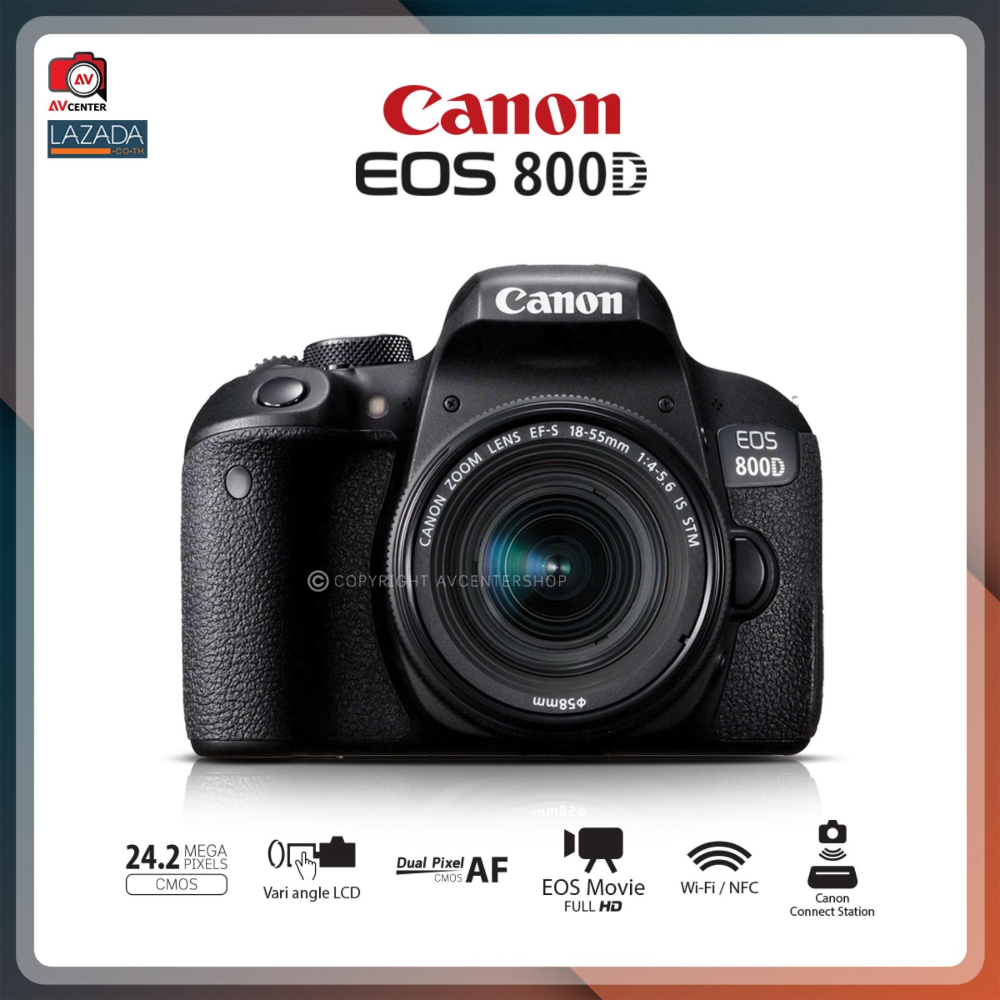
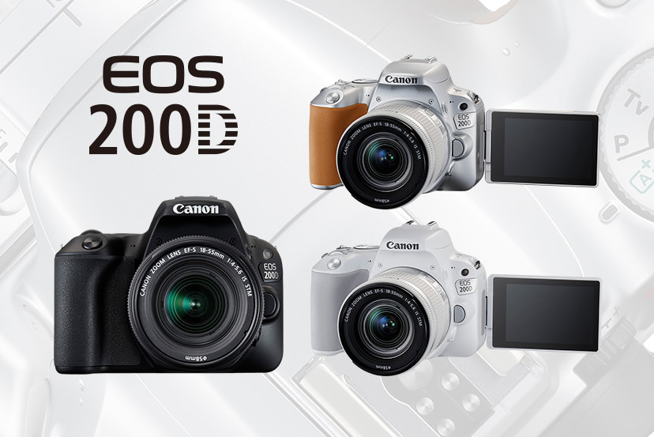
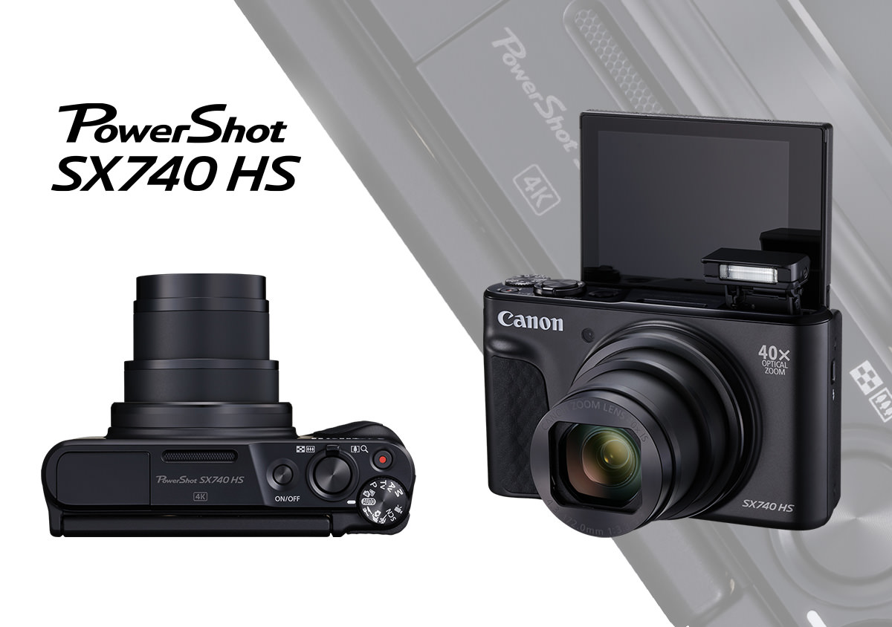
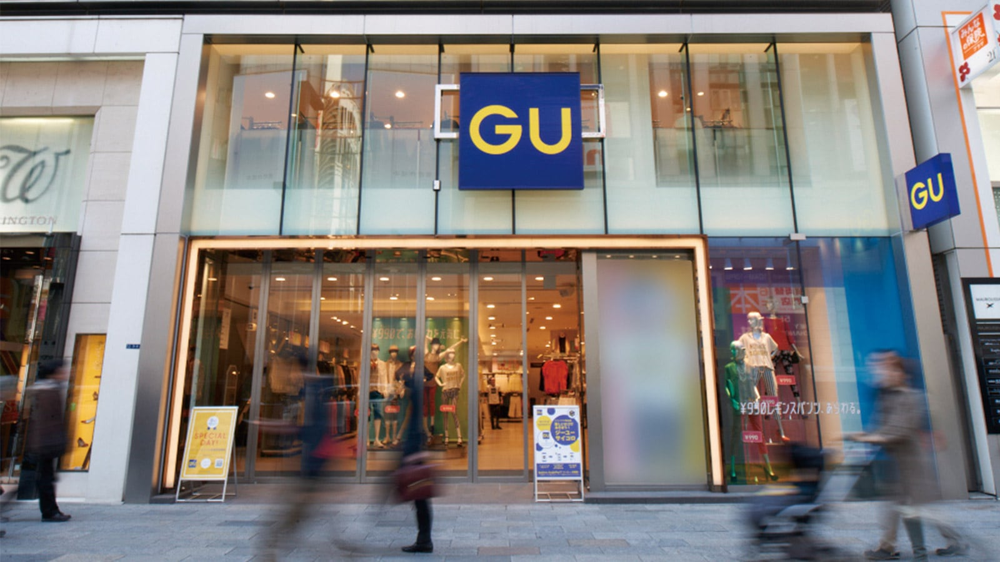
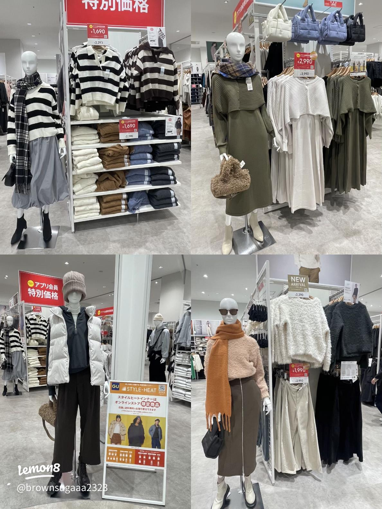
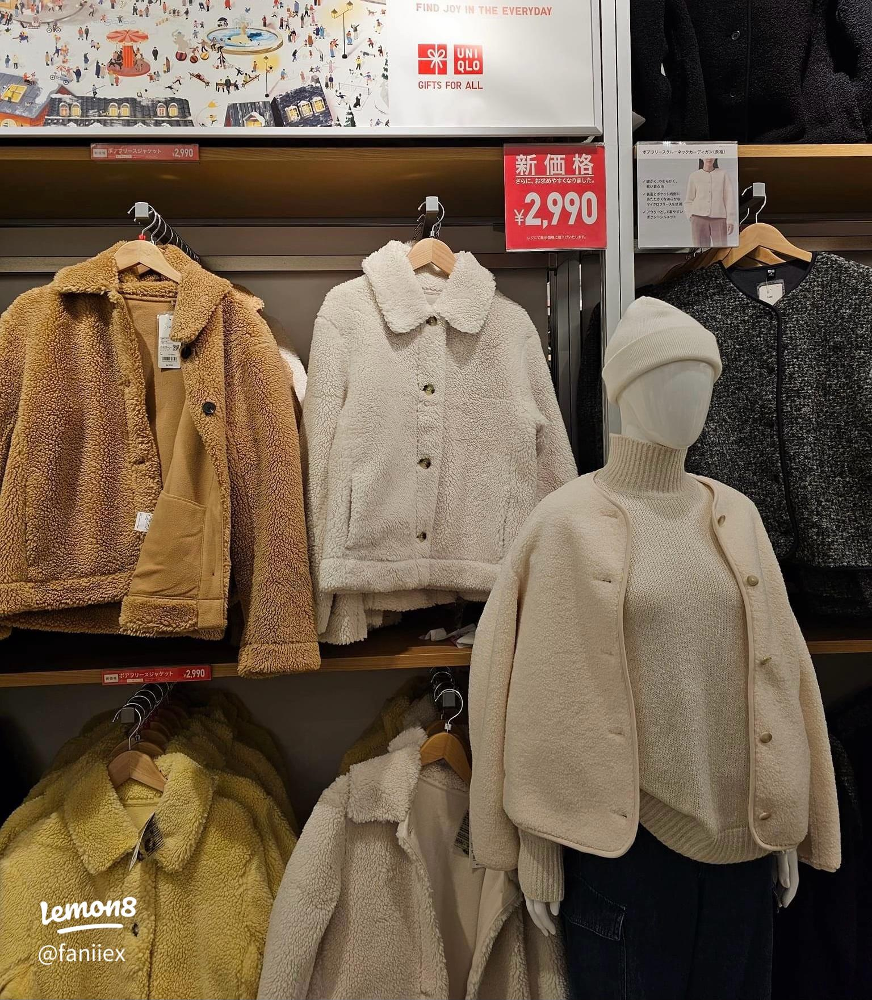
💡 Tips จากคนไปมาแล้ว
- ไปเช้าๆ 09:30 คนน้อย พนักงานช่วยได้เต็มที่
- ชั้น 6-7 คือชั้นกล้อง มือ 1 และ มือ 2
- มีห้องทดลองถ่ายรูปก่อนซื้อ
- สมัคร Point Card สะสมแต้ม 10% คืน
- พนักงานพูดอังกฤษได้ ขอดูสินค้าได้เลย
- กล้องมือ 2 มีรับประกัน 3-6 เดือน
🏬 ข้อมูลเพิ่มเติม Yodobashi Akiba
- ตึกใหญ่ที่สุด ของ Yodobashi ในญี่ปุ่น
- มีร้านอาหารชั้น 8 (มื้อเที่ยงได้)
- ชั้น B1-1F มีขนม/ของใช้ด้วย
- Counter Tax-Free อยู่ชั้น 1
- รับบัตรเครดิตทุกประเภท
- มีล็อกเกอร์ฝากของฟรี
📅 Day 4: Kawaguchiko (9 มี.ค.)
📅 Day 4 - 9 มี.ค. (วันเกิดพอใจ!)
เจดีย์ชูเรโตะ 🗻
Chureito Pagoda

| 📍 ที่อยู่ | Arakura, Fujiyoshida, Yamanashi |
| 🚌 การเดินทาง | Local Bus จาก Kawaguchiko Station |
| 💰 ค่าเข้า | ฟรี |
🎯 ไฮไลท์:
- เดิน 398 ขั้น ขึ้นไปยังเจดีย์ (~15 นาที)
- จุดถ่ายรูป Mt. Fuji ที่ดังที่สุดในโลก!
- เจดีย์แดง 5 ชั้น สร้างปี 1963
💡 Tips: ไปเช้าตรู่คนน้อย | ใส่รองเท้าผ้าใบ
📍
Google Maps
📷 รูปภาพและข้อมูลเพิ่มเติม


💡 Tips
- ไปเช้าตรู่ 07:00 คนน้อย!
- ใส่รองเท้าผ้าใบ (398 ขั้น ~15 นาที)
- ช่วงซากุระ (ปลายมี.ค.-เม.ย.) สวยมาก!
- มีจุดพักระหว่างทาง
- ฟูจิซังเห็นชัดตอนอากาศดี
🏯 เกี่ยวกับเจดีย์ชูเรโตะ
- เจดีย์แดง 5 ชั้น สร้างปี 1963
- รำลึกถึงผู้เสียชีวิตในสงคราม
- จุดถ่ายรูป Mt. Fuji ดังที่สุดในโลก!
- อยู่ในเขต Arakura Sengen Shrine
📸 เทคนิคถ่ายรูป
- ตั้งกล้องที่จุด Observation Deck
- ใช้ Wide Lens จะได้ทั้งเจดีย์และฟูจิ
- ช่วงเช้าแสงสวย ไม่มีเงา
- มี Tripod Stand ให้ใช้
📅 Day 4 - 9 มี.ค.
โอชิโนะ ฮักไค (8 บ่อน้ำใส)
Oshino Hakkai
| 📍 ที่อยู่ | Oshino, Minamitsuru District, Yamanashi |
| 🚌 การเดินทาง | Local Bus จาก Kawaguchiko Station (~20 นาที) |
| 💰 ค่าเข้า | ¥300 (฿63) /คน |
📅 Day 5: Ueno & Gotanda (10 มี.ค.)
📅 Day 5 - 10 มี.ค.
ทาเคยะ (ตึกม่วง) ราคาถูกสุด!
Takeya - Ueno

| 📍 ที่อยู่ | 2-27-1 Yushima, Taito-ku, Tokyo |
| ⏰ เวลา | 10:00 - 20:00 |
| 🚇 การเดินทาง | JR Yamanote: Shinjuku → Ueno (15 นาที) |
| 💳 Tax-Free | ✅ ซื้อเกิน ¥5,000 |
🏬 แผนผังชั้น
1F
ขนมญี่ปุ่น - KitKat, Tokyo Banana, Royce
2-3F
เครื่องสำอาง/สกินแคร์ - Shiseido, SK-II, Canmake
🍫 ขนมแนะนำ:
- KitKat รสชาติพิเศษ ¥300-800
- Tokyo Banana ¥1,000-1,500
- Royce Chocolate ¥800-1,500
✅ ทำไมต้อง Takeya? ราคาถูกกว่า Don Quijote และ
Matsumoto Kiyoshi!
📍 Google
Maps
📷 รูปภาพและข้อมูลเพิ่มเติม

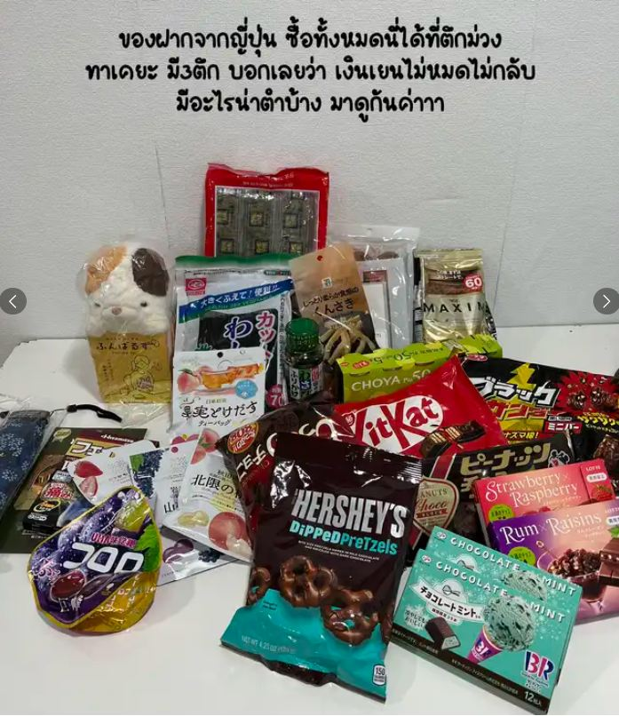
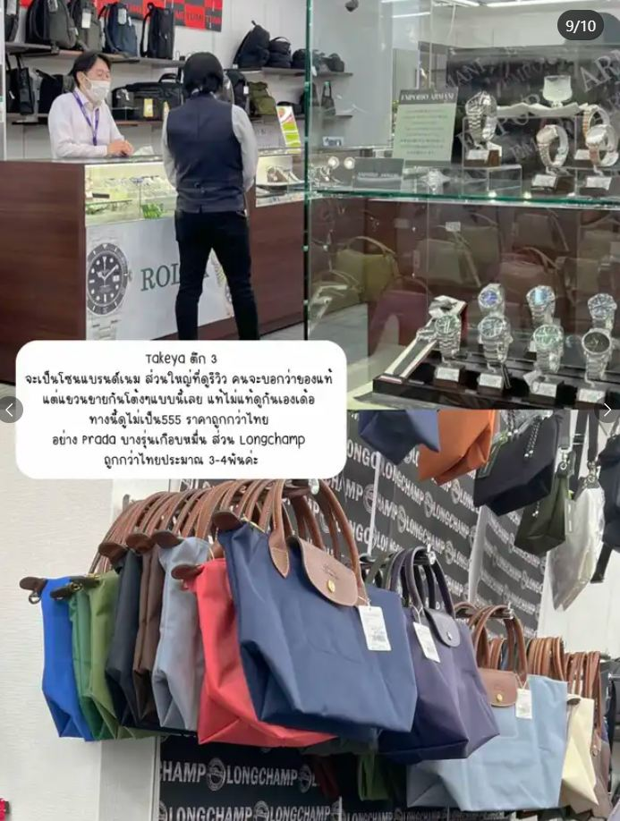
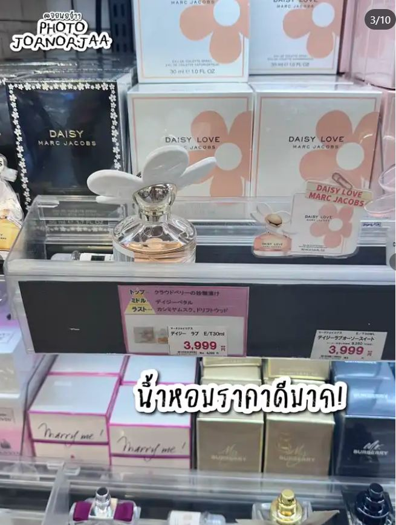

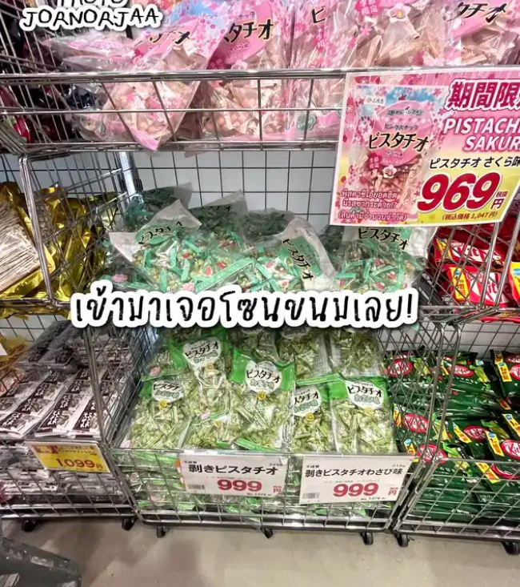
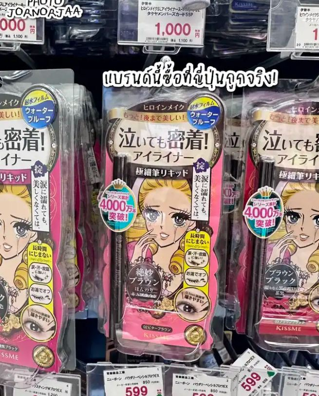
💡 Tips
- ราคาถูกกว่าที่อื่น 10-30%!
- มีหลายตึก เดินเชื่อมกันได้
- Tax-Free Counter ชั้น 1
- ซื้อของฝากที่นี่คุ้มที่สุด
- คนไม่แน่น สบายกว่า Don Quijote
🍫 ขนมยอดนิยม
- KitKat - มัทฉะ, สตรอว์เบอร์รี่, วาซาบิ
- Tokyo Banana - ของฝากยอดนิยม
- Royce Chocolate - ช็อคโกแลตพรีเมียม
- Shiroi Koibito - คุกกี้ฮอกไกโด
- Country Ma'am - คุกกี้นุ่ม
💄 เครื่องสำอางแนะนำ
- Canmake - บลัชออน, ลิป
- Cezanne - แป้ง, ไพรเมอร์
- Kate - อายไลเนอร์, มาสคาร่า
- Hada Labo - สกินแคร์
📅 Day 5 - 10 มี.ค.
ABC-MART (Outlet Gotanda)
ABC-MART
| 📍 สาขา | Gotanda (Outlet) |
| ⏰ เวลา | 11:00 - 20:00 |
| 🚇 การเดินทาง | Gotanda: JR Yamanote (West Exit) |
👟 แบรนด์ที่น่าสนใจ:
- Nike, Adidas, New Balance
- Onitsuka Tiger (ยอดฮิต!)
- Skechers (ใส่สบาย)
- Vans, Converse
✅ ทำไมต้องมา?
📍 Gotanda Map
- Gotanda (Outlet): ลดราคาพิเศษ (ตกรุ่น/ไซส์ไม่ครบ)
📷 รูปภาพและข้อมูลเพิ่มเติม


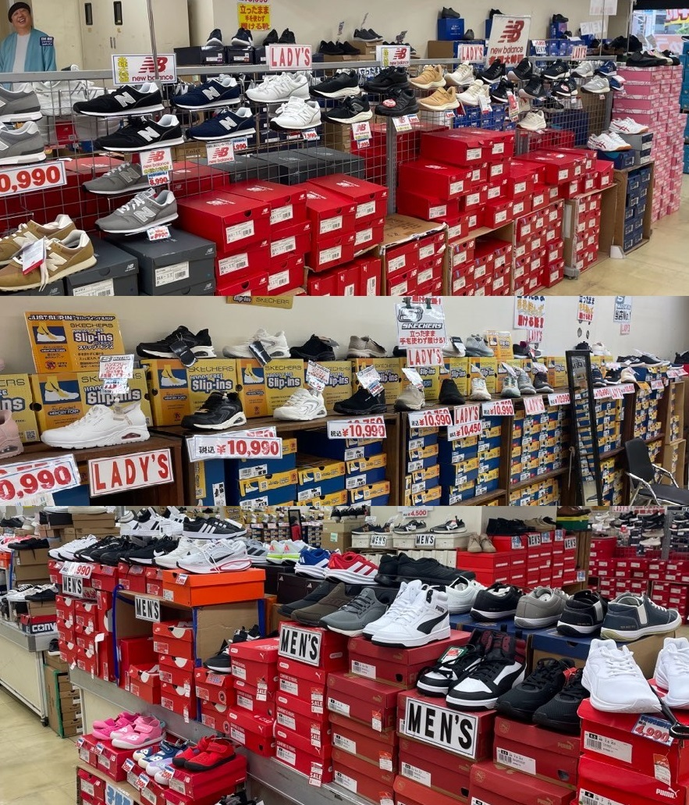
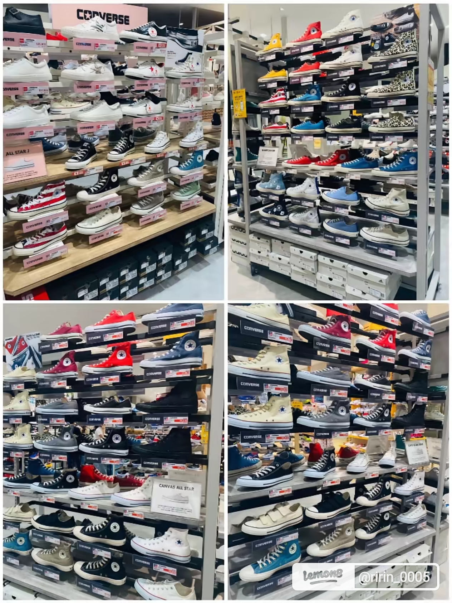
💡 Tips
- Gotanda Outlet: ตาดีได้ตาร้ายเสีย! ถ้าเจอไซส์คือคุ้มมาก
- Tax-Free: ซื้อครบ ¥5,000 ทำ Tax Refund ได้เลย
- ลองรองเท้าได้ตามสบาย
- เตรียมถุงเท้าไปลองด้วย
👟 รุ่นแนะนำ
- Onitsuka Tiger Mexico 66 - คลาสสิกตลอดกาล
- New Balance 530 - ฮิตมาก ใส่สบาย
- Nike Air Force 1 - แมทช์ง่าย
📅 Day 5 - 10 มี.ค.
ยูนิโคล่ โกทันดะ TOC
Uniqlo Gotanda TOC Building

| 📍 ที่อยู่ | TOC Building B1F, 7-21-1 Nishi-Gotanda, Shinagawa-ku, Tokyo |
| ⏰ เวลา | 11:00 - 20:00 |
| 🚇 การเดินทาง | Gotanda: JR Yamanote (West Exit) |
| 💳 Tax-Free | ✅ ซื้อเกิน ¥5,000 |
👕 สินค้าแนะนำ:
- Heattech (เสื้อ/กางเกง ลองจอน) ¥1,500-2,990
- Ultra Light Down Jacket/Vest ¥4,990-7,990
- Dry-EX T-shirts ¥990-1,990
- เสื้อกันหนาว/สเวตเตอร์ ¥2,990-4,990
✅ ทำไมต้อง Uniqlo?
📍 Google Maps
🌐 เว็บไซต์
- สินค้าคุณภาพดี ราคาคุ้มค่า
- มีเสื้อผ้าสำหรับอากาศหนาวโดยเฉพาะ
- อยู่ในตึกเดียวกับ ABC-MART Outlet
📷 รูปภาพและข้อมูลเพิ่มเติม


💡 Tips
- อยู่ชั้น B1F ตึก TOC Building
- มีเสื้อผ้าผู้ชาย ผู้หญิง และเด็ก
- ช่วงเปลี่ยนซีซั่นมีโปรโมชั่นดีๆ
- ทำ Tax-Free ได้ที่เคาน์เตอร์
🧥 สินค้าที่เหมาะกับหน้าหนาว
- Heattech: เสื้อตัวในที่ช่วยเก็บความอบอุ่น มีหลายระดับความหนา
- Ultra Light Down: เสื้อขนเป็ดน้ำหนักเบา ให้ความอบอุ่นดีเยี่ยม
- เสื้อกันหนาวผ้า Fleece
- ถุงมือ, ผ้าพันคอ, หมวก
📅 Day 6: GALA Yuzawa (11 มี.ค.)
📅 Day 6 - 11 มี.ค.
กาล่า ยูซาวะ เล่นหิมะ!
GALA Yuzawa Snow Resort

| 📍 ที่อยู่ | Yuzawa-machi, Minamiuonuma-gun, Niigata |
| 🚄 การเดินทาง | Joetsu Shinkansen จาก Tokyo (~77 นาที) |
| ⏰ เวลา | 08:00 - 17:00 |
| 🎫 ตั๋ว | ใช้ TWP Day 1 ฟรี! |
🎿 กิจกรรม:
- เล่นหิมะ (Snow Play Area)
- ปั้นตุ๊กตาหิมะ
- นั่ง Gondola ชมวิว
- Sledding (เลื่อนหิมะ)
💰 ค่าใช้จ่าย:
- Gondola Pass ¥2,000 /คน
- Snow Play Ticket ¥2,200 /คน
- Rental Set ¥5,500 /คน
- รวม 2 คน: ¥15,000
♨️ Bonus: มี Onsen ในรีสอร์ท!
แช่น้ำร้อนคลายหนาวก่อนกลับ
📍 Google
Maps
🌐 เว็บไซต์
📷 รูปภาพและข้อมูลเพิ่มเติม


💡 Tips
- สถานีต่อตรงกับรีสอร์ท - ไม่ต้องเดิน!
- เตรียมเสื้อกันหนาวหนาๆ (0°C ถึง -5°C)
- มี Onsen แช่ก่อนกลับ ฟรีสำหรับผู้เช่าอุปกรณ์
- ใช้ TWP ค่ารถฟรี!
- จองรถไฟล่วงหน้า ที่นั่งจำกัด
🎿 กิจกรรมแนะนำ
- Snow Play Area - เล่นหิมะ ปั้นตุ๊กตา
- Sledding - เลื่อนหิมะลงเนิน
- Gondola - ชมวิวภูเขาหิมะ
- Snowball Fight - ปาหิมะ
🧥 สิ่งที่ต้องเตรียม
- เสื้อกันหนาว/กันน้ำ (หรือเช่าได้)
- ถุงมือกันน้ำ
- แว่นกันแดด (หิมะสะท้อนแสง)
- เปลี่ยนเสื้อผ้าสำรอง (เปียกแน่นอน)
📅 Day 7: Yotsuya, Harajuku, Shinjuku (12 มี.ค.)
📅 Day 7 - 12 มี.ค. (08:00-09:30)
ศาลเจ้าซูกะ (บันได Your Name) 🎬
Suga Shrine - Yotsuya
| 📍 ที่อยู่ | 5 Sugacho, Shinjuku-ku, Tokyo |
| 🚇 การเดินทาง | JR Chuo: Shinjuku → Yotsuya (5 นาที) แล้วเดิน 5 นาที |
| 💰 ค่าเข้า | ฟรี |
🎬 ทำไมต้องมา?
- บันไดในฉากสำคัญของ "Your Name" (คิมิ โนะ นะ วะ)
- ฉากที่ตาคิและมิตสึฮะเดินสวนกัน
- แฟนอนิเมะทั่วโลกมาถ่ายรูปที่นี่
💡 Tips: ไปเช้าตรู่ (07:00-08:00) คนน้อย
ถ่ายรูปได้สวยไม่ต้องรอคิว
📍
Google Maps
📷 รูปภาพและข้อมูลเพิ่มเติม

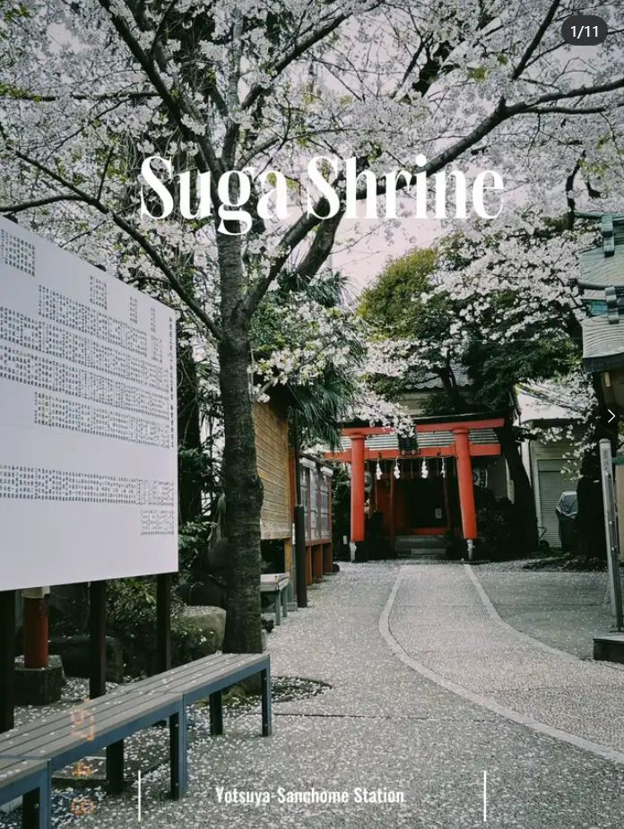
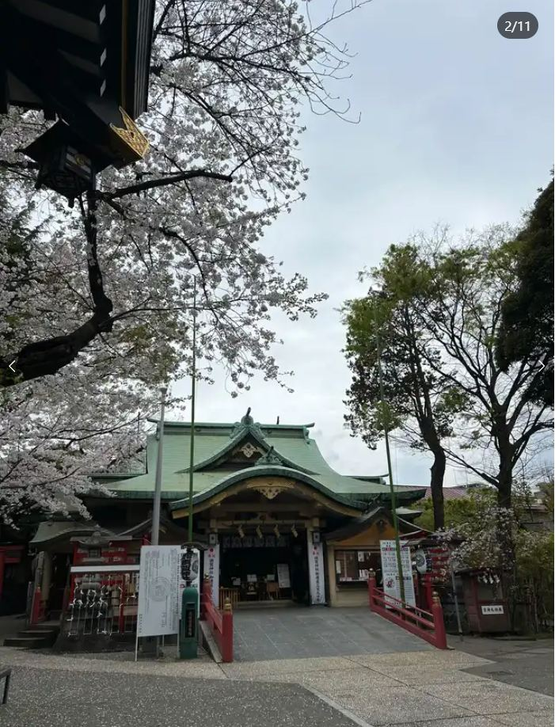
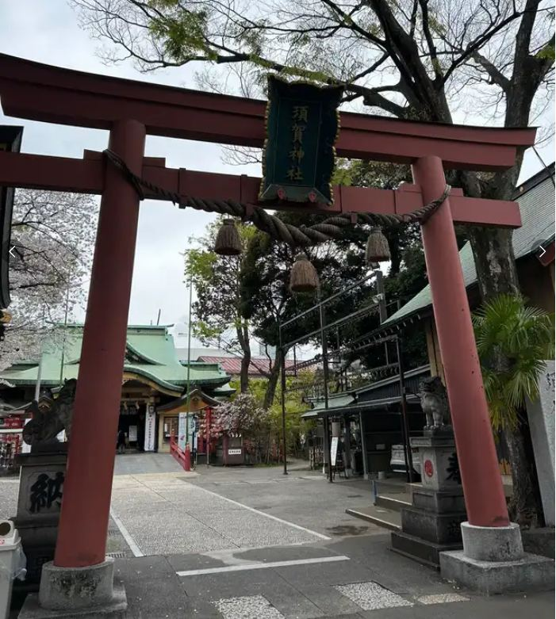

💡 Tips
- ไปเช้าตรู่ 07:00-08:00 คนน้อยมาก!
- นำรูปจากอนิเมะไปเปรียบเทียบ
- ศาลเจ้าจริงอายุ 300+ ปี
- บันไดมี 36 ขั้น
- ถ่ายรูปมุมเดียวกับในอนิเมะได้
🎬 เกี่ยวกับ Your Name
- ฉากสำคัญที่ตาคิและมิตสึฮะเดินสวนกัน
- อนิเมะฮิตปี 2016 ทำเงิน $380 ล้าน
- แฟนอนิเมะทั่วโลกมาถ่ายรูปที่นี่
- มีป้ายบอกว่าเป็นสถานที่จากอนิเมะ
📍 สถานที่ใกล้เคียง
- สถานี JR Yotsuya (เดิน 5 นาที)
- Sophia University (อยู่ใกล้)
- หลังถ่ายรูปเสร็จไป Shinjuku ต่อได้เลย
📅 Day 7 - 12 มี.ค.
บิ๊ก คาเมร่า ชินจูกุ
Bic Camera Shinjuku West Exit
| 📍 ที่อยู่ | 1-5-1 Nishishinjuku, Shinjuku-ku, Tokyo |
| ⏰ เวลา | 10:00 - 21:00 |
| 🚇 การเดินทาง | เดิน 3 นาที จาก JR Shinjuku West Exit |
🛒 สินค้าที่น่าสนใจ:
- กระเป๋าเดินทาง 20kg ¥8,000-15,000
- อุปกรณ์อิเล็กทรอนิกส์
- หูฟัง, ลำโพง Bluetooth
📷 รูปภาพและข้อมูลเพิ่มเติม
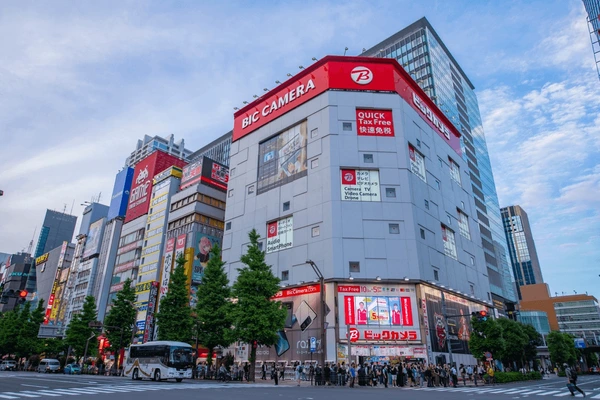
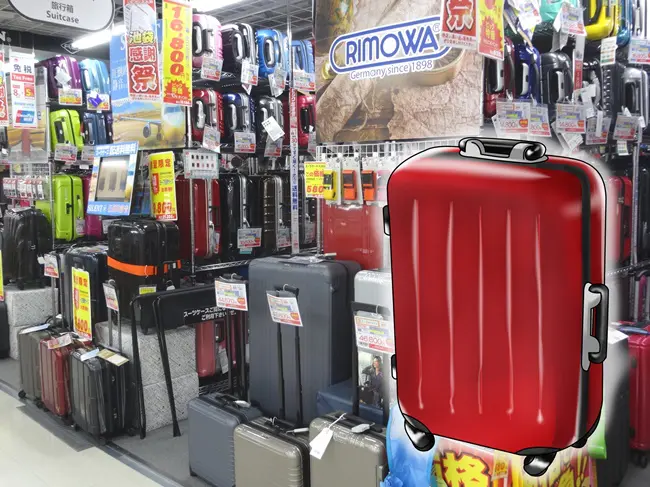
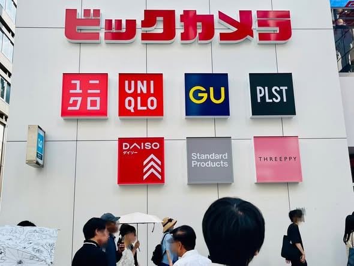
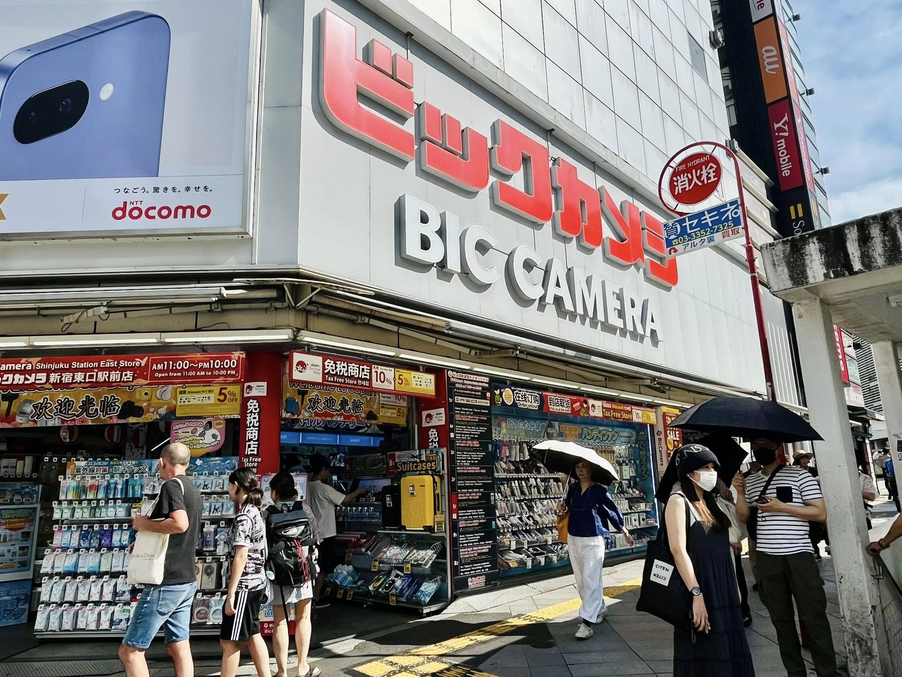
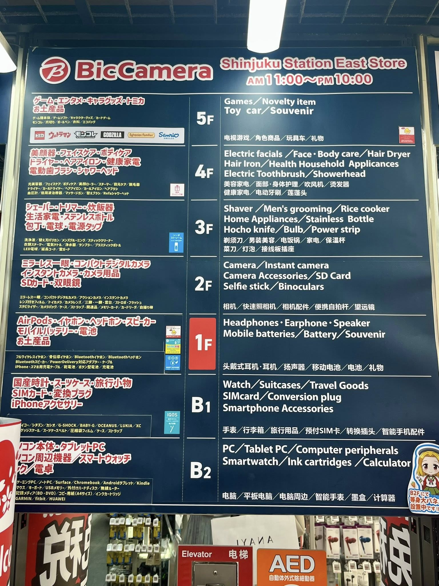
💡 Tips
- กระเป๋าเดินทางชั้น 5-6 มีหลายยี่ห้อ
- Tax-Free Counter ชั้น 1 (ต่อแถวนาน)
- แนะนำกระเป๋า Samsonite, Ace ราคาถูกกว่าไทย
- หูฟัง Sony, Audio-Technica ราคาดี
- มี Point Card แยกจาก Yodobashi
🎒 แนะนำกระเป๋าเดินทาง
- Samsonite Cosmolite - เบา ทนทาน
- Ace Proteca - แบรนด์ญี่ปุ่น คุณภาพดี
- American Tourister - ราคาถูก
- เลือกขนาด 20-24 นิ้ว รองรับ 20kg
📅 Day 7 - 12 มี.ค. (12:30-14:00)
คิดดี้ แลนด์ ฮาราจุกุ ไฮไลท์!
Kiddy Land Harajuku

| 📍 ที่อยู่ | 6-1-9 Jingumae, Shibuya-ku, Tokyo 150-0001 |
| ⏰ เวลา | 11:00 - 21:00 |
| 🚇 การเดินทาง | เดิน 5 นาที จาก JR Harajuku Station |
🏬 แผนผังชั้น (พอใจต้องชอบ!)
B1F
Sanrio - Hello Kitty, Cinnamoroll, My Melody, Kuromi
1F
Studio Ghibli Store - Totoro, Kiki, No-Face, Ponyo
2F
Snoopy Town & Moomin
3F
Disney Store
4F
Rilakkuma & Sumikko Gurashi
💰 ราคาตัวอย่าง:
- ตุ๊กตา Cinnamoroll/Hello Kitty เล็ก ¥2,000-3,000
- ตุ๊กตา Totoro กลาง ¥3,000-5,000
- กระเป๋าดินสอ Sanrio ¥1,500-2,500
- พวงกุญแจ ¥500-1,000
📷 รูปภาพและข้อมูลเพิ่มเติม


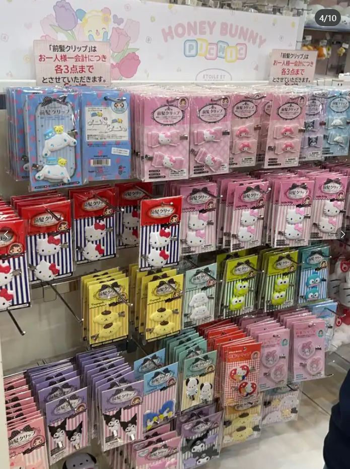
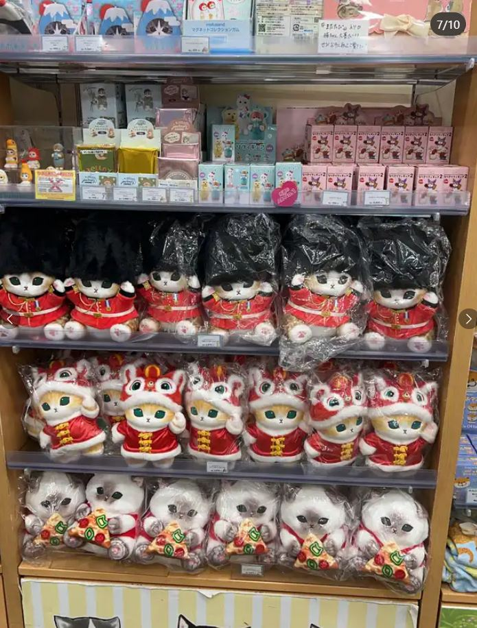

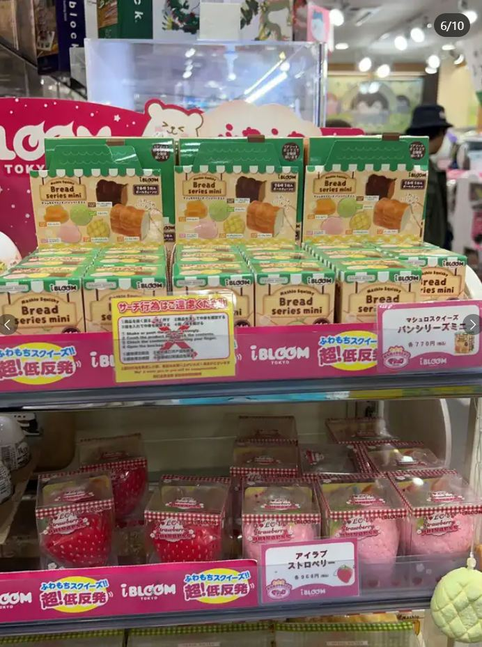
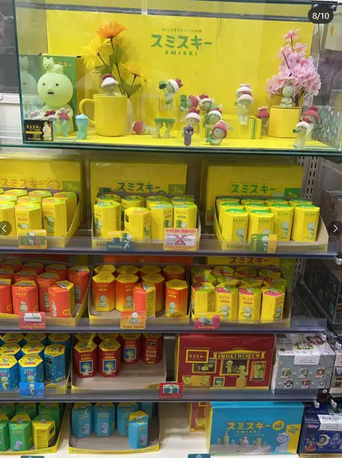
💡 Tips
- ชั้น B1F (Sanrio) คนเยอะสุด ไปก่อน!
- มีสินค้า Limited Edition เฉพาะญี่ปุ่น
- Tax-Free Counter ชั้น 1
- ห้ามพลาด Ghibli Store ชั้น 1!
- เปิด 11:00 ไปตอนเที่ยงไม่แน่น
🎀 สินค้าแนะนำที่ต้องซื้อ
- Cinnamoroll - ตุ๊กตา, กระเป๋า, สมุด
- Kuromi - เทรนด์มาแรง!
- Totoro - ตุ๊กตาทุกขนาด
- No-Face - กระเป๋า, พวงกุญแจ
- สินค้า Exclusive Japan Only มีป้ายบอก
📍 ร้านใกล้เคียงที่น่าสนใจ
- Takeshita Street (เดิน 2 นาที)
- Marion Crepes (ครีปดังฮาราจุกุ)
- Daiso Harajuku (ของ ¥100)
📅 Day 7 - 12 มี.ค. (14:00-15:00)
แบรนดี้ เมลวิลล์
Brandy Melville Harajuku
| 📍 ที่อยู่ | 3-29-5 Jingumae, Shibuya-ku, Tokyo |
| ⏰ เวลา | 11:00 - 19:00 ⚠️ ปิดเร็ว! |
| 🚇 การเดินทาง | เดิน 8 นาที จาก JR Harajuku Station |
👚 สไตล์:
- แฟชั่นวัยรุ่นหญิงสไตล์ Casual/Trendy
- เสื้อผ้าสีพื้น โทนสีนุ่มนวล
- One size fits most
💰 ราคาตัวอย่าง:
- ครอปท็อป/เสื้อยืด ¥2,000-3,500
- กางเกงยีนส์/กระโปรง ¥4,000-6,000
- เสื้อกันหนาว/Hoodie ¥4,000-5,000
⚠️ หมายเหตุ: ร้านปิด 19:00 น. ต้องไปก่อน Shopping
Shinjuku ตอนเย็น!
📍 Google Maps
📷 รูปภาพและข้อมูลเพิ่มเติม


💡 Tips
- ร้านปิดเร็ว 19:00! ต้องไปก่อน
- One size fits most - ลองก่อนซื้อ
- สไตล์ California casual vibe
- เสื้อผ้าโทนสีพื้น เหมาะมิกซ์แอนด์แมตช์
- ราคาไม่แพง คุณภาพโอเค
👗 สินค้าขายดี
- Crop Top - สีขาว เบจ ดำ
- Hoodie - พิมพ์โลโก้
- กางเกงยีนส์ - ทรง Mom/Wide leg
- เสื้อยืด Graphic
📍 ร้านใกล้เคียง
- Kiddy Land (เดิน 5 นาที)
- Cat Street (แหล่งแฟชั่น)
- Omotesando (เดิน 10 นาที)
📅 Day 7 - 12 มี.ค. (17:45-19:00)
ซานริโอ เวิลด์ ชินจูกุ
Sanrio World Shinjuku (Takashimaya 11F)
| 📍 ที่อยู่ | Takashimaya Times Square 11F, 5-24-2 Sendagaya |
| ⏰ เวลา | 10:00 - 20:00 |
| 🚇 การเดินทาง | เดิน 2 นาที จาก JR Shinjuku South Exit |
🎯 จุดเด่น:
- Flagship Store ใหญ่ที่สุดในโตเกียว!
- Hello Kitty, Cinnamoroll, Kuromi, My Melody
- สินค้า Exclusive เฉพาะสาขานี้
💰 ราคาตัวอย่าง:
- เสื้อยืด Sanrio ¥3,000-4,000
- กระเป๋าสะพาย ¥4,000-6,000
📷 รูปภาพและข้อมูลเพิ่มเติม
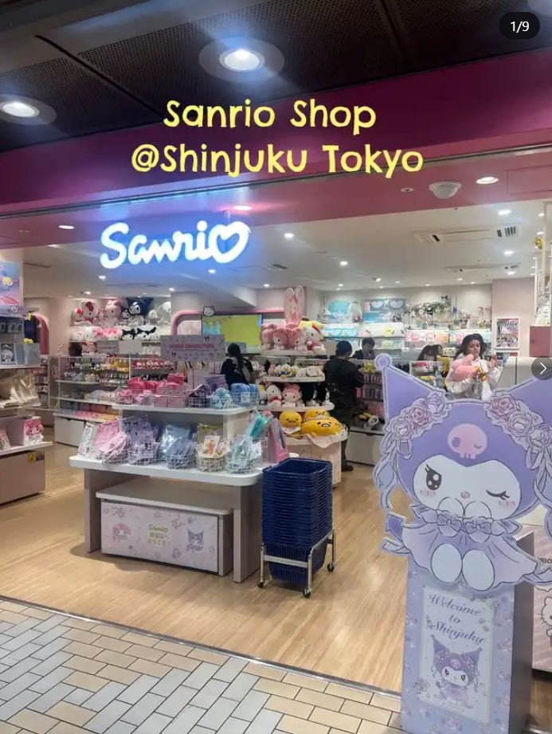
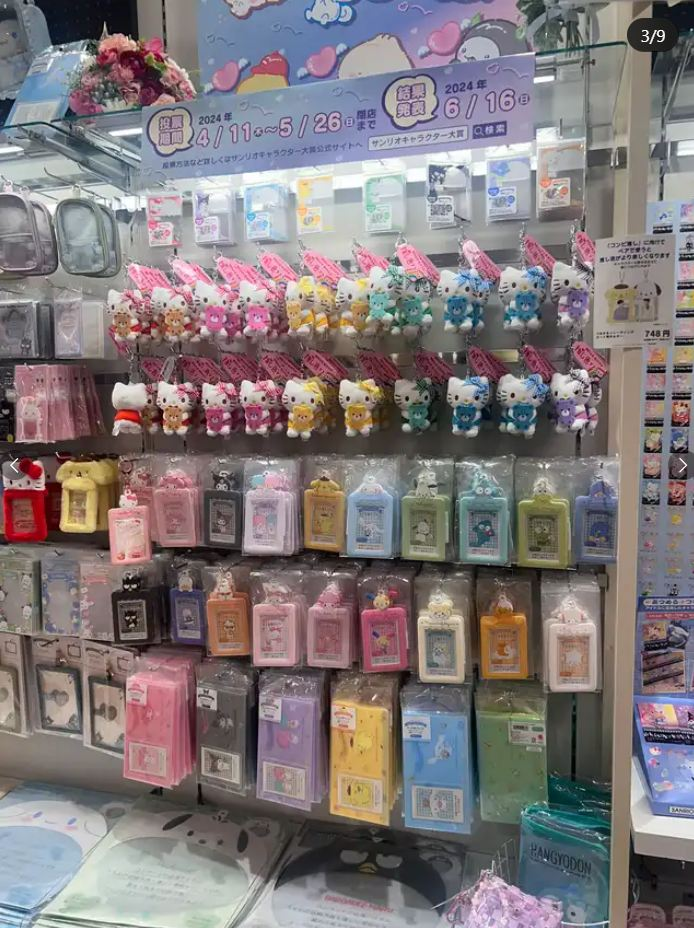
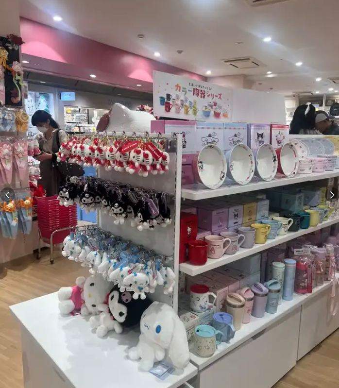
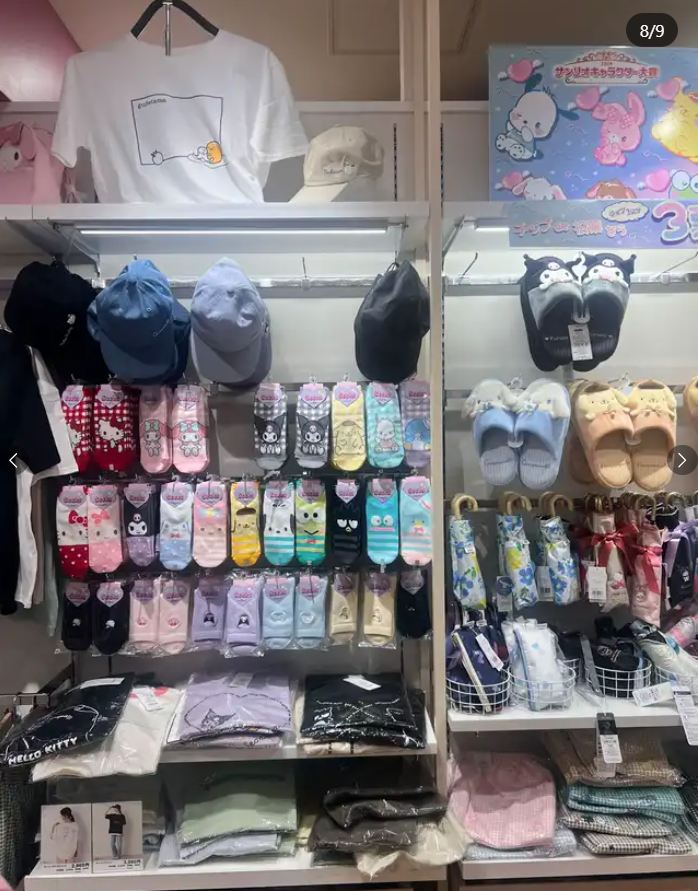
💡 Tips
- ร้านใหญ่มาก ต้องเผื่อเวลา 1-2 ชม.
- Exclusive items เยอะ หาที่อื่นไม่ได้
- มีมุมถ่ายรูปกับตุ๊กตายักษ์
- อยู่ชั้น 11 ใน Takashimaya
- ทำ Tax-Free ได้ที่ Counter ชั้น 6
🎀 Exclusive Items แนะนำ
- Cinnamoroll Cafe Series - เฉพาะสาขานี้
- My Melody Kimono - ลาย Limited
- เสื้อผ้า Sanrio คุณภาพดี
- กระเป๋าหนังแท้ Sanrio
📅 Day 7 - 12 มี.ค. (17:45-19:00)
จิบลิ สโตร์ (Ghibli Store)
Donguri Republic - Lumine EST Shinjuku
| 📍 ที่อยู่ | Lumine EST Shinjuku B1F, 3-38-1 Shinjuku |
| ⏰ เวลา | 11:00 - 21:00 |
| 🚇 การเดินทาง | ติดสถานี JR Shinjuku East Exit |
🎬 คาแรคเตอร์จากภาพยนตร์:
- My Neighbor Totoro - ตุ๊กตา, กระเป๋า, ร่ม
- Kiki's Delivery Service - Jiji แมวดำ
- Spirited Away - No-Face, Haku
- Howl's Moving Castle - Calcifer
💰 ราคาตัวอย่าง:
- ตุ๊กตา Totoro ใหญ่ ¥5,000-8,000
- ตุ๊กตา Jiji/No-Face ¥2,500-4,000
- พวงกุญแจ ¥800-1,500
📷 รูปภาพและข้อมูลเพิ่มเติม


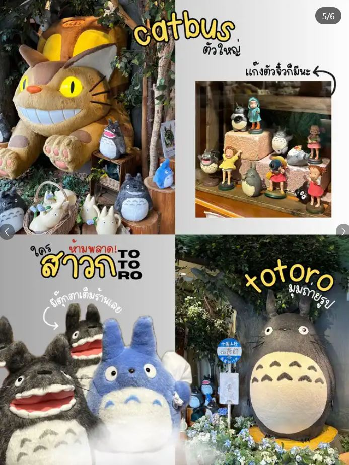
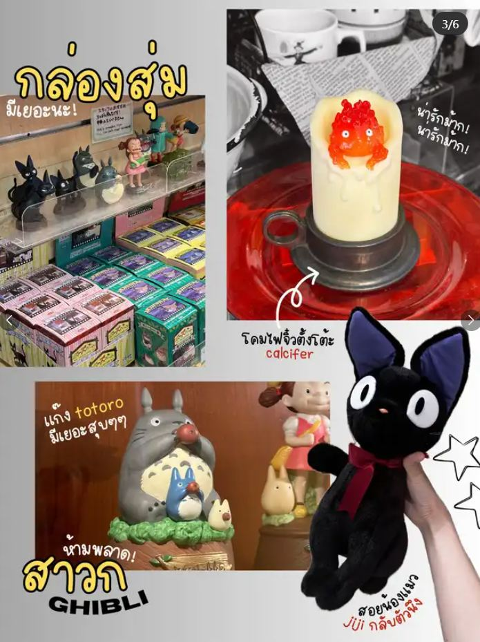
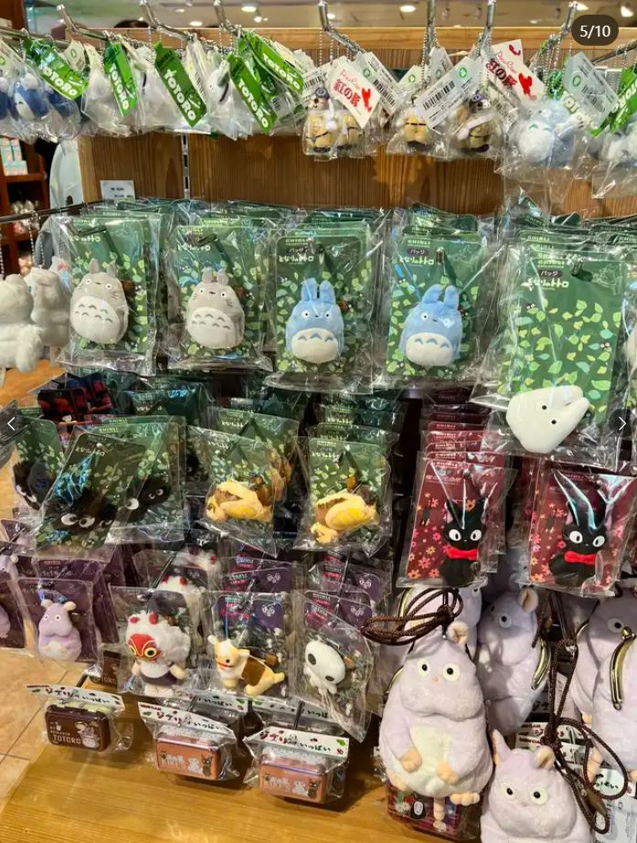
💡 Tips
- ร้าน Official ของ Studio Ghibli
- สินค้าคุณภาพดี แต่ราคาสูงหน่อย
- มี Totoro ขนาดยักษ์ให้ถ่ายรูป
- อยู่ชั้น B1F ของ Lumine EST
- ติดสถานี JR Shinjuku East Exit
🌿 สินค้ายอดนิยม
- Totoro - ตุ๊กตาทุกขนาด S/M/L/XL
- No-Face - กระเป๋า, ตุ๊กตา, กระปุกออมสิน
- Jiji - แมวดำจาก Kiki's Delivery
- Calcifer - ตุ๊กตาไฟจาก Howl
- ผ้าขนหนู Ghibli คุณภาพ Imabari
🎬 สินค้าจากแต่ละเรื่อง
- Spirited Away - ขายดีที่สุด!
- My Neighbor Totoro - ครบทุกไอเทม
- Ponyo - น่ารัก สีสันสดใส
📅 Day 8: Ueno (13 มี.ค.)
📅 Day 8 - 13 มี.ค. (11:30-12:00)
ABC-MART (Ueno)
ABC-MART
| 📍 สาขา | Ueno |
| ⏰ เวลา | 11:00 - 20:00 |
| 🚇 การเดินทาง | Ueno: ใกล้ JR Ueno Station |
👟 แบรนด์ที่น่าสนใจ:
- Nike, Adidas, New Balance
- Onitsuka Tiger (ยอดฮิต!)
- Skechers (ใส่สบาย)
- Vans, Converse
✅ ทำไมต้องมา?
📍 Ueno
Map
- Ueno: รุ่นใหม่/รุ่นฮิตครบ
📷 รูปภาพและข้อมูลเพิ่มเติม
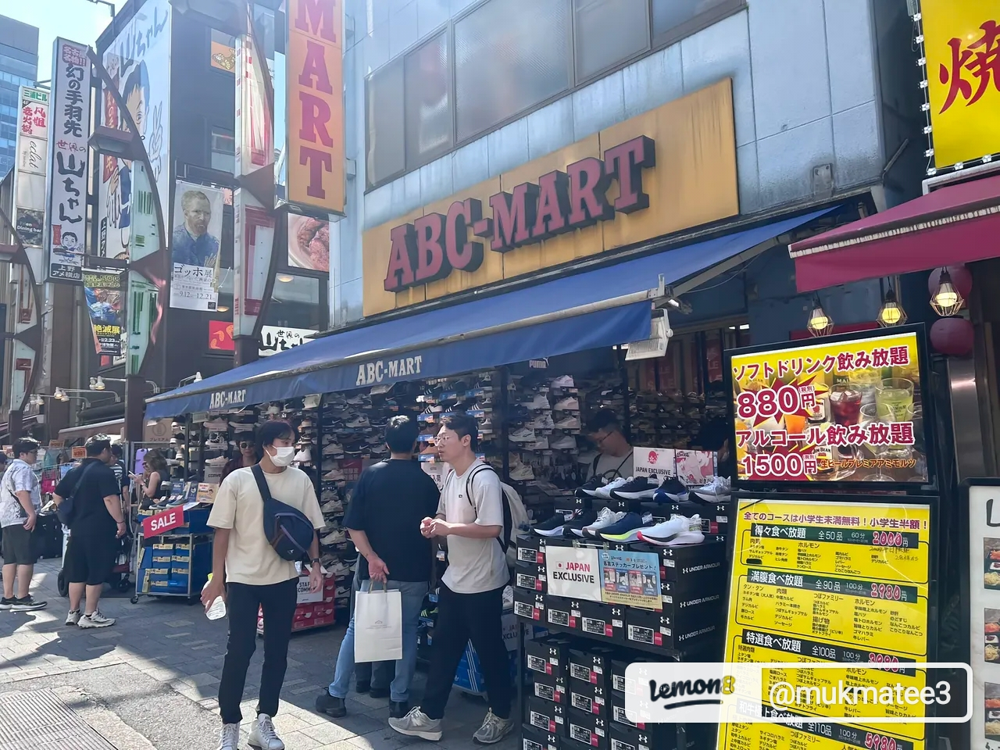
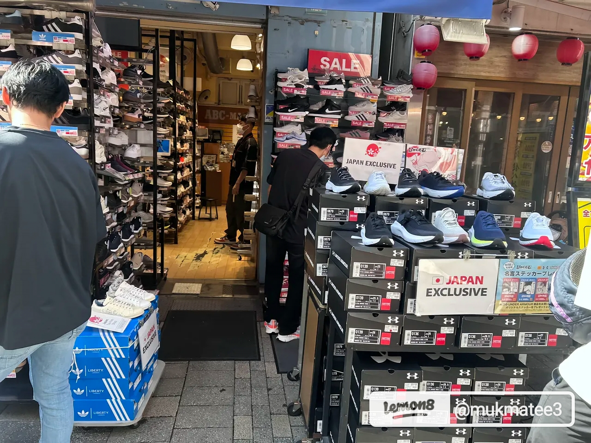
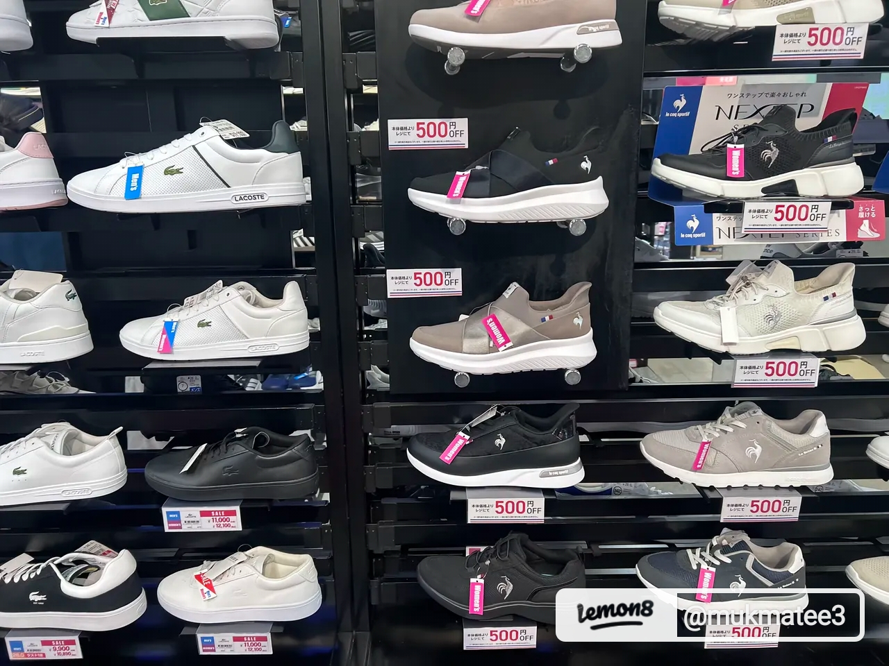
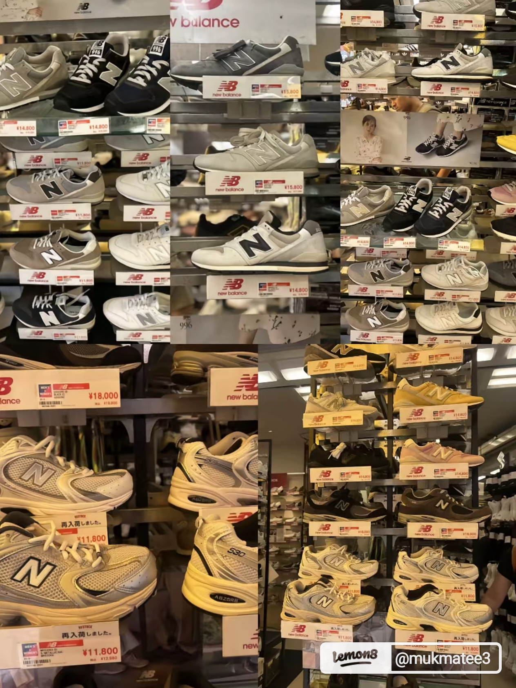
💡 Tips
- Tax-Free: ซื้อครบ ¥5,000 ทำ Tax Refund ได้เลย
- ลองรองเท้าได้ตามสบาย
- เตรียมถุงเท้าไปลองด้วย
👟 รุ่นแนะนำ
- Onitsuka Tiger Mexico 66 - คลาสสิกตลอดกาล
- New Balance 530 - ฮิตมาก ใส่สบาย
- Nike Air Force 1 - แมทช์ง่าย
📅 Day 8 - 13 มี.ค. (11:30-12:00)
ตลาดอะเมโยโกะ
Ameyoko Market
| 📍 ที่อยู่ | 4 Chome Ueno, Taito City (ข้าง JR Ueno Station) |
| ⏰ เวลา | 10:00 - 19:00 |
🍡 ของกินแนะนำ (แค่เดินดู + หาของกิน):
- ปลาย่าง / หอยย่าง
- ผลไม้สด (สตรอว์เบอร์รี่ญี่ปุ่น!)
- ขนมปัง / ขนมหวาน
⚠️ หมายเหตุ: แค่เดินดู + หาของกิน (30 นาที) ไม่แนะนำซื้อของฝาก
เพราะราคานักท่องเที่ยว
📍
Google Maps
📷 รูปภาพและข้อมูลเพิ่มเติม

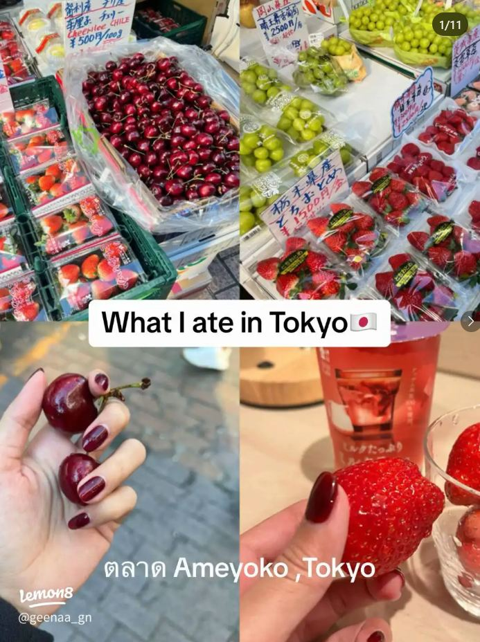
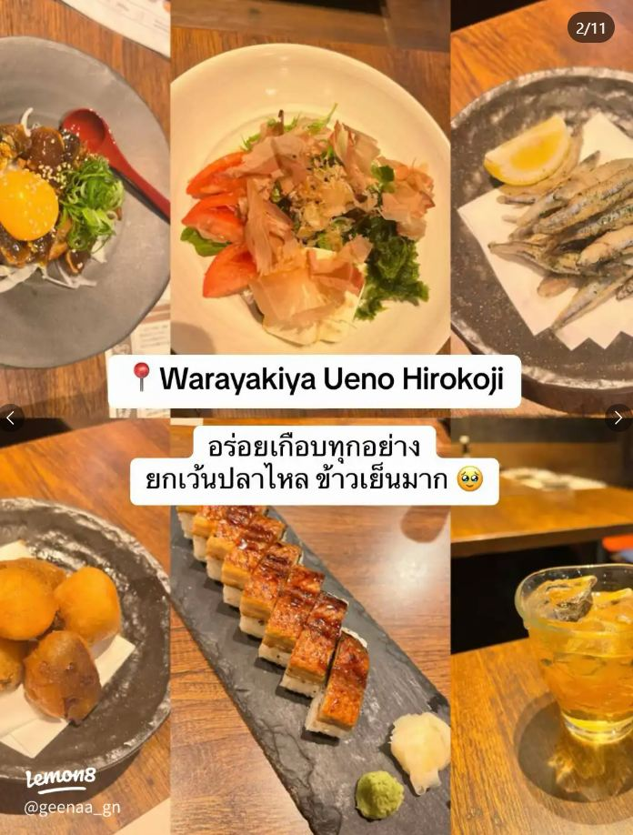

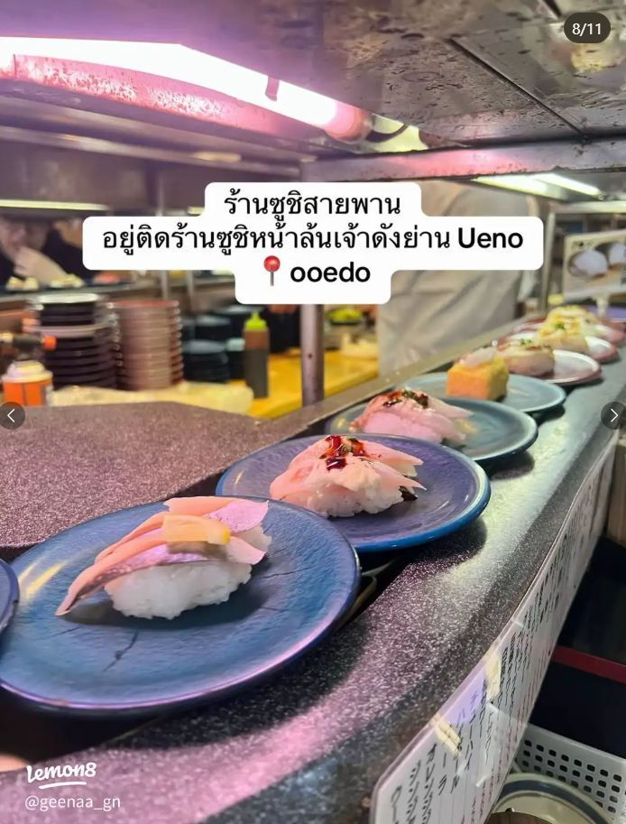
💡 Tips
- แค่เดินดู หาของกิน (30 นาที)
- ไม่แนะนำซื้อของฝาก - ราคานักท่องเที่ยว
- ติด JR Ueno Station ออก Shinobazu Exit
- ตลาดยาว 400 เมตร
- เปิดมาตั้งแต่หลังสงครามโลก
🍡 ของกินแนะนำ
- ปลาย่าง/หอยย่าง - สดใหม่ทุกวัน
- ไอศกรีมผลไม้ - สตรอว์เบอร์รี่ เมลอน
- โมจิย่าง - หวานหนึบ
- ผลไม้สด - ราคาถูกกว่าที่อื่น
- ถั่วต่างๆ - ราคาส่ง
📍 ร้านใกล้เคียง
- Takeya (เดิน 5 นาที) - ซื้อของฝากที่นี่แทน
- Ueno Park (เดิน 3 นาที)